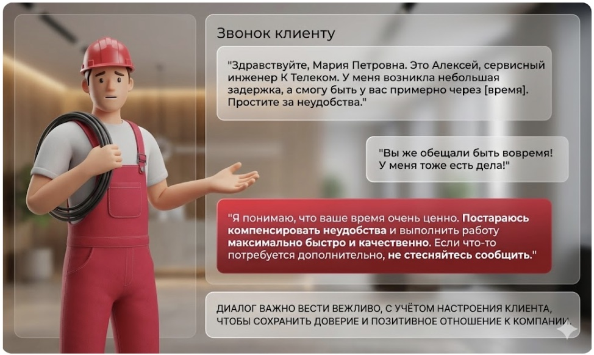
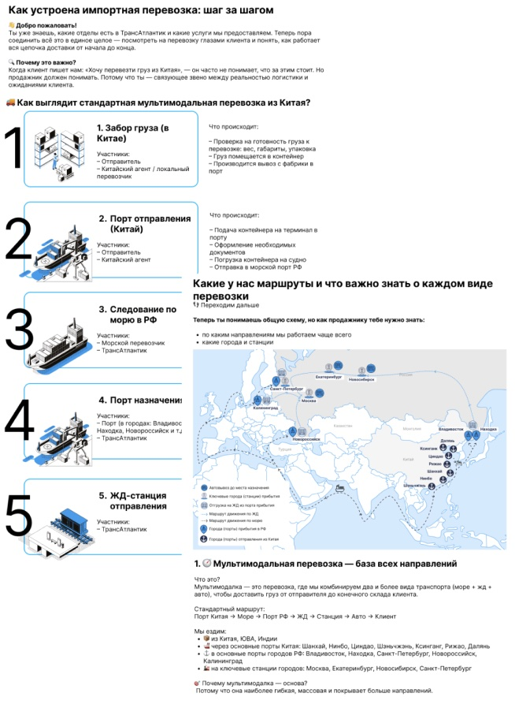
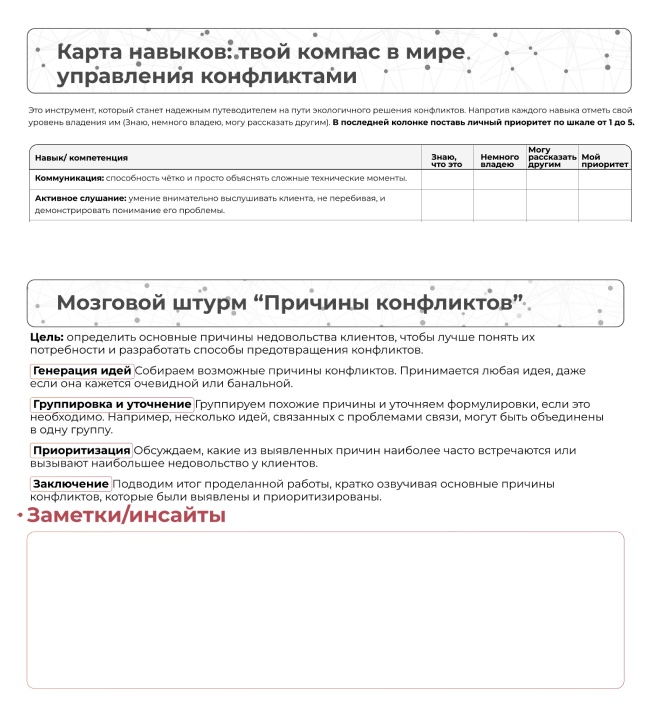
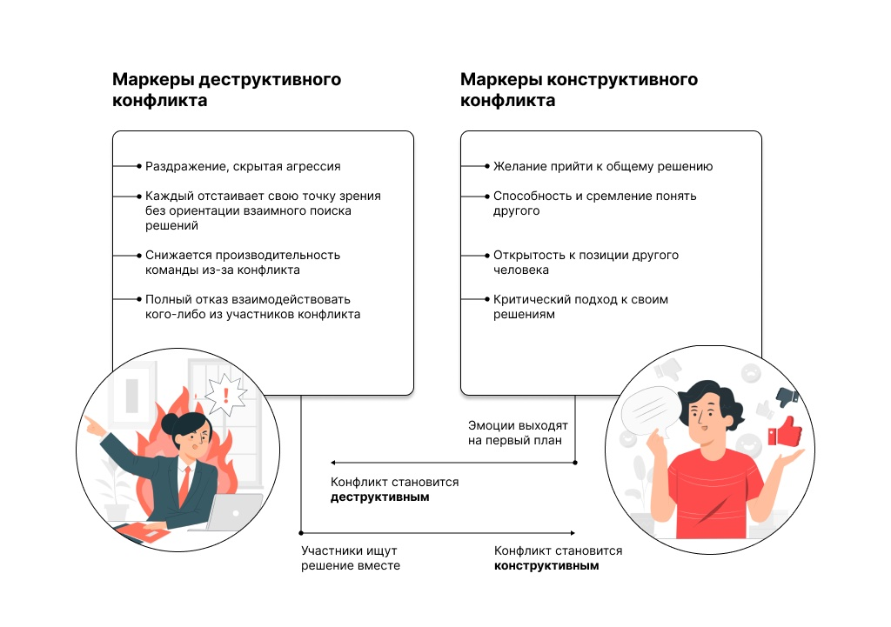

Избранные кейсы

Обучение сервисных инженеров с нуля
Проблема:
Стихийное обучение занимало до 6 месяцев. Наставники-сдельщики не хотели учить новичков, что вело к аварийности на объектах.
Решение:
- Оцифровка знаний в Moodle.
- Внедрение учебных стендов для практики без риска аварий.
- Регламент и аттестация наставников.
Срок вывода сокращен в 3 раза (с 3 месяцев до 1).

Онбординг в международной логистике
Проблема:
Разрозненная информация о продукте. Новички в стрессе. Нужно было решение без ресурсов на дорогую LMS.
Решение:
- Глубинные интервью для сбора «базы выживания».
- Сборка контента в микро-формате (карточки, тренажеры).
- Запуск Telegram-бота для полевого обучения.
Выход на результат быстрее в 2 раза. Сэкономлен бюджет LMS.

Мастермайнд: Клиентский сервис
Проблема:
Выгорание саппорта. Из-за стресса операторам тяжело оставаться тактичными. Сухая теория не работала.
Решение (Терапевтический формат):
- Теория: как устроен мозг в стрессе.
- Техники самопомощи и взаимоподдержки.
- Безопасное пространство, чтобы "поныть".
Рост позитивной обратной связи от клиентов.

Свежий проект: Конфликтология
Обучающий лонгрид, спроектированный на стыке сторителлинга и нейробиологии обучения. Содержит интерактивные блоки «активного вспоминания» для лучшего усвоения.